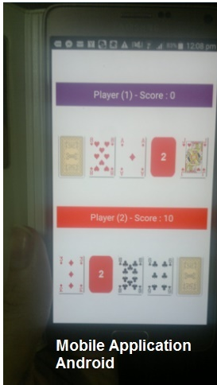

Desktop and Mobile development using RingQt¶
In this chapter we will learn how to use the Qt framework classes in our Ring applications to create Desktop and Mobile Applications.
The First GUI Application¶
In this example we will create an application to ask the user about his/her name. When the user type the name in the textbox then click on “Say Hello” button, the textbox value will be updated by adding “Hello ” to the name.
Load "guilib.ring"
MyApp = New qApp {
win1 = new qWidget() {
setwindowtitle("Hello World")
setGeometry(100,100,370,250)
label1 = new qLabel(win1) {
settext("What is your name ?")
setGeometry(10,20,350,30)
setalignment(Qt_AlignHCenter)
}
btn1 = new qpushbutton(win1) {
setGeometry(10,200,100,30)
settext("Say Hello")
setclickevent("pHello()")
}
btn1 = new qpushbutton(win1) {
setGeometry(150,200,100,30)
settext("Close")
setclickevent("pClose()")
}
lineedit1 = new qlineedit(win1) {
setGeometry(10,100,350,30)
}
show()
}
exec()
}
Func pHello
lineedit1.settext( "Hello " + lineedit1.text())
Func pClose
MyApp.quit()
Program Output:
At first we type the name in the textbox
Then we click on the say hello button
Using Layout¶
The next example is just an upgrade to the previous application to use the vertical layout.
Load "guilib.ring"
MyApp = New qApp {
win1 = new qWidget() {
setwindowtitle("Hello World")
setGeometry(100,100,400,130)
label1 = new qLabel(win1) {
settext("What is your name ?")
setGeometry(10,20,350,30)
setalignment(Qt_AlignHCenter)
}
btn1 = new qpushbutton(win1) {
setGeometry(10,200,100,30)
settext("Say Hello")
setclickevent("pHello()")
}
btn2 = new qpushbutton(win1) {
setGeometry(150,200,100,30)
settext("Close")
setclickevent("pClose()")
}
lineedit1 = new qlineedit(win1) {
setGeometry(10,100,350,30)
}
layout1 = new qVBoxLayout() {
addwidget(label1)
addwidget(lineedit1)
addwidget(btn1)
addwidget(btn2)
}
win1.setlayout(layout1)
show()
}
exec()
}
Func pHello
lineedit1.settext( "Hello " + lineedit1.text())
Func pClose
MyApp.quit()
The application during the runtime!
Using the QTextEdit Class¶
In this example we will use the QTextEdit Class
Load "guilib.ring"
New qApp {
win1 = new qWidget() {
setwindowtitle("QTextEdit Class")
setGeometry(100,100,500,500)
new qtextedit(win1) {
setGeometry(10,10,480,480)
}
show()
}
exec()
}
During the runtime we can paste rich text in the qtextedit widget
Using the QListWidget Class¶
In this example we will use the QListWidget Class
Load "guilib.ring"
New qApp {
win1 = new qWidget() {
setGeometry(100,100,400,400)
list1 = new qlistwidget(win1) {
setGeometry(150,100,200,200)
alist = ["one","two","three","four","five"]
for x in alist additem(x) next
setcurrentrow(3,2)
win1.setwindowtitle("Items Count : " + count() )
}
btn1 = new qpushbutton(win1) {
setGeometry(10,200,100,30)
settext("selected item")
setclickevent("pWork()")
}
btn2 = new qpushbutton(win1) {
setGeometry(10,240,100,30)
settext("Delete item")
setclickevent("pWork2()")
}
show()
}
exec()
}
func pWork
btn1.settext(string(list1.currentrow()))
func pWork2
list1 {
takeitem(currentrow())
}
The application during the runtime
Using QTreeView and QFileSystemModel¶
In this example we will learn how to use the QTreeView widget to represent the File System
Load "guilib.ring"
New qApp {
win1 = New qWidget() {
setwindowtitle("Using QTreeView and QFileSystemModel")
setGeometry(100,100,500,400)
New qtreeview(win1) {
setGeometry(00,00,500,400)
oDir = new QDir()
ofile = new QFileSystemModel()
ofile.setrootpath(oDir.currentpath())
setmodel(ofile)
}
show()
}
exec()
}
The application during the runtime
Using QTreeWidget and QTreeWidgetItem¶
In this example we will learn about using the QTreeWidget and QTreeWidgetItem classes
Load "guilib.ring"
New qApp {
win1 = new qWidget() {
setwindowtitle("TreeWidget")
setGeometry(100,100,400,400)
layout1 = new qvboxlayout(win1)
tree1 = new qtreewidget(win1) {
setGeometry(00,00,400,400)
setcolumncount(1)
myitem = new qtreewidgetitem()
myitem.settext(0,"The First Step")
addtoplevelitem(myitem)
for x = 1 to 10
myitem2 = new qtreewidgetitem()
myitem2.settext(0,"hello"+x)
myitem.addchild(myitem2)
for y = 1 to 10
myitem3 = new qtreewidgetitem()
myitem3.settext(0,"hello"+x)
myitem2.addchild(myitem3)
next
next
setheaderlabel("Steps Tree")
}
layout1.addwidget(tree1)
setlayout(layout1)
show()
}
exec()
}
The application during the runtime

Using QComboBox Class¶
In this example we will learn about using the QComboBox class
Load "guilib.ring"
New qApp {
win1 = new qWidget() {
setwindowtitle("Using QComboBox")
setGeometry(100,100,400,400)
New QComboBox(win1) {
setGeometry(150,100,200,30)
alist = ["one","two","three","four","five"]
for x in aList additem(x,0) next
}
show()
}
exec()
}
The application during the runtime
Creating Toolbar¶
In this example we will learn about using the QToolBar class
Load "guilib.ring"
New qApp {
win1 = new qMainWindow() {
setwindowtitle("Using QToolbar")
setGeometry(100,100,600,400)
abtns = [
new qpushbutton(win1) { settext("Add") } ,
new qpushbutton(win1) { settext("Edit") } ,
new qpushbutton(win1) { settext("Find") } ,
new qpushbutton(win1) { settext("Delete") } ,
new qpushbutton(win1) { settext("Exit")
setclickevent("win1.close()") }
]
tool1 = new qtoolbar(win1) {
for x in abtns addwidget(x) addseparator() next
setmovable(true)
setGeometry(0,0,500,30)
setFloatable(true)
}
show()
}
exec()
}
The application during the runtime
Creating StatusBar¶
In this example we will learn about using the QStatusBar class
Load "guilib.ring"
New qApp {
win1 = new qMainWindow() {
setwindowtitle("Using QStatusbar")
setGeometry(100,100,400,400)
status1 = new qstatusbar(win1) {
showmessage("Ready!",0)
}
setstatusbar(status1)
show()
}
exec()
}
The application during the runtime
Using QDockWidget¶
In this example we will learn about using the QDockWidget class
Load "guilib.ring"
New qApp {
win1 = new qMainWindow() {
setwindowtitle("QDockWidget")
setGeometry(100,100,400,400)
label1 = new qlabel(win1) {
settext("Hello")
setGeometry(300,300,100,100)
}
label2 = new qlabel(win1) {
settext("How are you ?")
setGeometry(100,100,100,100)
}
dock1 = new qdockwidget(win1,0) {
setwidget(label1)
SetAllowedAreas(1)
}
dock2 = new qdockwidget(win1,0) {
setwidget(label2)
SetAllowedAreas(2)
}
adddockwidget(Qt_LeftDockWidgetArea,dock1,Qt_Horizontal)
adddockwidget(Qt_LeftDockWidgetArea,dock2,Qt_Vertical)
show()
}
exec()
}
The application during the runtime
Using QTabWidget¶
In this example we will learn about using the QTabWidget class
Load "guilib.ring"
New qApp {
win1 = new qMainWindow() {
setwindowtitle("Using QTabWidget")
setGeometry(100,100,400,400)
page1 = new qwidget() {
new qpushbutton(page1) {
settext("The First Page")
}
}
page2 = new qwidget() {
new qpushbutton(page2) {
settext("The Second Page")
}
}
page3 = new qwidget() {
new qpushbutton(page3) {
settext("The Third Page")
}
}
tab1 = new qtabwidget(win1) {
inserttab(0,page1,"Page 1")
inserttab(1,page2,"Page 2")
inserttab(2,page3,"Page 3")
setGeometry(100,100,400,400)
}
status1 = new qstatusbar(win1) {
showmessage("Ready!",0)
}
setstatusbar(status1)
showMaximized()
}
exec()
}
The application during the runtime
Using QTableView¶
In this example we will learn about using the QTableView class
Load "guilib.ring"
New qApp {
win1 = new qMainWindow() {
setGeometry(100,100,1100,370)
setwindowtitle("Using QTableWidget")
Table1 = new qTableWidget(win1) {
setrowcount(10) setcolumncount(10)
setGeometry(0,0,800,400)
setselectionbehavior(QAbstractItemView_SelectRows)
for x = 1 to 10
for y = 1 to 10
item1 = new qtablewidgetitem("R"+X+"C"+Y)
setitem(x-1,y-1,item1)
next
next
}
setcentralwidget(table1)
show()
}
exec()
}
The application during the runtime

Using QProgressBar¶
In this example we will learn about using the QProgressBar class
Load "guilib.ring"
New qApp {
win1 = new qMainWindow() {
setGeometry(100,100,600,150)
setwindowtitle("Using QProgressBar")
for x = 10 to 100 step 10
new qprogressbar(win1) {
setGeometry(100,x,350,30)
setvalue(x)
}
next
show()
}
exec()
}
The application during the runtime
Using QSpinBox¶
In this example we will learn about using the QSpinBox class
Load "guilib.ring"
New qApp {
win1 = new qMainWindow() {
setGeometry(100,100,450,260)
setwindowtitle("Using QSpinBox")
new qspinbox(win1) {
setGeometry(50,100,350,30)
setvalue(50)
}
show()
}
exec()
}
The application during the runtime
Using QSlider¶
In this example we will learn about using the QSlider class
Load "guilib.ring"
New qApp {
win1 = new qMainWindow() {
setGeometry(100,100,500,400)
setwindowtitle("Using QSlider")
new qslider(win1) {
setGeometry(100,100,50,130)
settickinterval(50)
}
new qslider(win1) {
setGeometry(100,250,250,30)
settickinterval(50)
setorientation(Qt_Horizontal)
}
show()
}
exec()
}
The application during the runtime
Using QDateEdit¶
In this example we will learn about using the QDateEdit class
Load "guilib.ring"
New qApp {
win1 = new qMainWindow() {
setwindowtitle("Using QDateEdit")
setGeometry(100,100,250,100)
new qdateedit(win1) {
setGeometry(20,40,220,30)
}
show()
}
exec()
}
The application during the runtime
Using QDial¶
In this example we will learn about using the QDial class
Load "guilib.ring"
New qApp {
win1 = new qMainWindow() {
setGeometry(100,100,450,500)
setwindowtitle("Using QDial")
new qdial(win1) {
setGeometry(100,100,250,300)
}
show()
}
exec()
}
The application during the runtime
Using QWebView¶
In this example we will learn about using the QWebView class
Load "guilib.ring"
New qApp {
win1 = new qMainWindow() {
setwindowtitle("QWebView")
myweb = new qwebview(win1) {
setGeometry(10,10,600,600)
loadpage(new qurl("http://google.com"))
}
setcentralwidget(myweb)
showMaximized()
}
exec()
}
The application during the runtime
Using QCheckBox¶
In this example we will learn about using the QCheckBox class
Load "guilib.ring"
New qApp {
win1 = new qMainWindow() {
setwindowtitle("Using QCheckBox")
new qcheckbox(win1) {
setGeometry(100,100,100,30)
settext("New Customer!")
}
showMaximized()
}
exec()
}
The application during the runtime
Using QRadioButton and QButtonGroup¶
In this example we will learn about using the QRadioButton and QButtonGroup classes
Load "guilib.ring"
New qApp {
win1 = new qMainWindow() {
setwindowtitle("Using QRadioButton")
new qradiobutton(win1) {
setGeometry(100,100,100,30)
settext("One")
}
new qradiobutton(win1) {
setGeometry(100,150,100,30)
settext("Two")
}
new qradiobutton(win1) {
setGeometry(100,200,100,30)
settext("Three")
}
group2 = new qbuttongroup(win1) {
btn4 = new qradiobutton(win1) {
setGeometry(200,150,100,30)
settext("Four")
}
btn5 = new qradiobutton(win1) {
setGeometry(200,200,100,30)
settext("Five")
}
addbutton(btn4,0)
addbutton(btn5,0)
}
showMaximized()
}
exec()
}
The application during the runtime
Adding Hyperlink to QLabel¶
In this example we will learn about creating Hyperlink using the QLabel class
Load "guilib.ring"
New qApp {
win1 = new qMainWindow() {
setwindowtitle("QLabel - Hyperlink")
new qlabel(win1) {
setGeometry(100,100,100,30)
setopenexternallinks(true)
settext('<a href="http://google.com">Google</a>')
}
showMaximized()
}
exec()
}
The application during the runtime
QVideoWidget and QMediaPlayer¶
In this example we will learn about using the QVideoWidget and QMediaPlayer classes to play a group of movies from different positions at the same time
Load "guilib.ring"
New qApp {
win1 = new qMainWindow() {
setwindowtitle("QVideoWidget")
btn1 = new qpushbutton(win1) {
setGeometry(0,0,100,30)
settext("play")
setclickevent("player.play() player2.play()
player3.play() player4.play()")
}
videowidget = new qvideowidget(win1) {
setGeometry(50,50,600,300)
setstylesheet("background-color: black")
}
videowidget2 = new qvideowidget(win1) {
setGeometry(700,50,600,300)
setstylesheet("background-color: black")
}
videowidget3 = new qvideowidget(win1) {
setGeometry(50,370,600,300)
setstylesheet("background-color: black")
}
videowidget4 = new qvideowidget(win1) {
setGeometry(700,370,600,300)
setstylesheet("background-color: black")
}
player = new qmediaplayer() {
setmedia(new qurl("1.mp4"))
setvideooutput(videowidget)
setposition(35*60*1000)
}
player2 = new qmediaplayer() {
setmedia(new qurl("2.mp4"))
setvideooutput(videowidget2)
setposition(23*60*1000)
}
player3 = new qmediaplayer() {
setmedia(new qurl("3.mp4"))
setvideooutput(videowidget3)
setposition(14.22*60*1000)
}
player4 = new qmediaplayer() {
setmedia(new qurl("4.avi"))
setvideooutput(videowidget4)
setposition(8*60*1000)
}
showfullscreen()
}
exec()
}
The application during the runtime
Using QFrame¶
In this example we will learn about using the QFrame class
Load "guilib.ring"
New qApp {
win1 = new qMainWindow() {
setwindowtitle("Using QFrame")
for x = 0 to 10
frame1 = new qframe(win1,0) {
setGeometry(100,20+50*x,400,30)
setframestyle(QFrame_Raised | QFrame_WinPanel)
}
next
showMaximized()
}
exec()
}
The application during the runtime
Display Image using QLabel¶
In this example we will learn about displaying an image using the QLabel widget
Load "guilib.ring"
New qApp {
win1 = new qMainWindow() {
setwindowtitle("QLabel - Display image")
new qlabel(win1) {
image = new qpixmap("b:/mahmoud/photo/advice.jpg")
setpixmap(image)
setGeometry(0,0,image.width(),image.height())
}
showMaximized()
}
exec()
}
The application during the runtime
QLineEdit Events and QMessageBox¶
In this example we will learn about using QLineEdit Events and displaying a Messagebox
Load "guilib.ring"
MyApp = New qApp {
win1 = new qWidget() {
setwindowtitle("Welcome")
setGeometry(100,100,400,300)
label1 = new qLabel(win1) {
settext("What is your name ?")
setGeometry(10,20,350,30)
setalignment(Qt_AlignHCenter)
}
btn1 = new qpushbutton(win1) {
setGeometry(10,200,100,30)
settext("Say Hello")
setclickevent("pHello()")
}
btn1 = new qpushbutton(win1) {
setGeometry(150,200,100,30)
settext("Close")
setclickevent("pClose()")
}
lineedit1 = new qlineedit(win1) {
setGeometry(10,100,350,30)
settextchangedevent("pChange()")
setreturnpressedevent("penter()")
}
show()
}
exec()
}
Func pHello
lineedit1.settext( "Hello " + lineedit1.text())
Func pClose
MyApp.quit()
Func pChange
win1 { setwindowtitle( lineedit1.text() ) }
Func pEnter
new qmessagebox(win1) {
setwindowtitle("Thanks")
settext("Hi " + lineedit1.text() )
setstylesheet("background-color : white")
show()
}
The application during the runtime
Other Widgets Events¶
Each Qt signal can be used in RingQt, just add Set before the signal name and add event after the signal name to get the method that can be used to determine the event code.
For example the QProgressBar class contains a signal named valueChanged() To use it just use the function setValueChangedEvent()
Example:
Load "guilib.ring"
New qApp {
win1 = new qMainWindow() {
setwindowtitle("QProgressBar valueChanged Event")
progress1 = new qprogressbar(win1) {
setGeometry(100,100,350,30)
setvalue(10)
setvaluechangedevent("pChange()")
}
new qpushbutton(win1) {
setGeometry(10,10,100,30)
settext("increase")
setclickevent("pIncrease()")
}
showMaximized()
}
exec()
}
func pIncrease
progress1 { setvalue(value()+1) }
func pchange
win1.setwindowtitle("value : " + progress1.value() )
The application during the runtime
Another example for the stateChanged event of the QCheckBox class
Load "guilib.ring"
New qApp {
win1 = new qMainWindow() {
setwindowtitle("QCheckBox")
new qcheckbox(win1) {
setGeometry(100,100,100,30)
settext("New Customer!")
setstatechangedevent("pchange()")
}
showMaximized()
}
exec()
}
Func pChange
new qMessageBox(Win1) {
setWindowTitle("Checkbox")
settext("State Changed!")
show()
}
The application during the runtime
Using the QTimer Class¶
In this example we will learn about using the QTimer class
Load "guilib.ring"
new qApp {
win1 = new qwidget() {
setgeometry(100,100,200,70)
setwindowtitle("Timer")
label1 = new qlabel(win1) {
setgeometry(10,10,200,30)
settext(thetime())
}
new qtimer(win1) {
setinterval(1000)
settimeoutevent("pTime()")
start()
}
show()
}
exec()
}
func ptime
label1.settext(thetime())
Func thetime
return "Time : " + Time()
The application during the runtime
Using the QFileDialog Class¶
Example
Load "guilib.ring"
New qapp {
win1 = new qwidget() {
setwindowtitle("open file")
setgeometry(100,100,400,400)
new qpushbutton(win1) {
setgeometry(10,10,200,30)
settext("open file")
setclickevent("pOpen()")
}
show()
}
exec()
}
Func pOpen
new qfiledialog(win1) {
cName = getopenfilename(win1,"open file","c:\","source files(*.ring)")
win1.setwindowtitle(cName)
}
The application during the runtime
Drawing using QPainter¶
In this example we will learn about drawing using the QPainter class
Load "guilib.ring"
New qapp {
win1 = new qwidget() {
setwindowtitle("Drawing using QPainter")
setgeometry(100,100,500,500)
label1 = new qlabel(win1) {
setgeometry(10,10,400,400)
settext("")
}
new qpushbutton(win1) {
setgeometry(200,400,100,30)
settext("draw")
setclickevent("draw()")
}
show()
}
exec()
}
Func draw
p1 = new qpicture()
color = new qcolor() {
setrgb(0,0,255,255)
}
pen = new qpen() {
setcolor(color)
setwidth(10)
}
new qpainter() {
begin(p1)
setpen(pen)
drawline(500,150,950,450)
drawline(950,550,500,150)
endpaint()
}
label1 { setpicture(p1) show() }
The application during the runtime
Printing using QPrinter¶
In this example we will learn how to print to PDF file using QPrinter
Load "guilib.ring"
new qApp {
win1 = new qwidget() {
setwindowtitle("Printer")
setgeometry(100,100,500,500)
myweb = new qwebview(win1) {
setgeometry(100,100,1000,500)
loadpage(new qurl("http://google.com"))
}
new qpushbutton(win1) {
setGeometry(20,20,100,30)
settext("Print")
setclickevent("print()")
}
showmaximized()
}
exec()
}
func print
printer1 = new qPrinter(0) {
setoutputformat(1) # 1 = pdf
setoutputfilename("test.pdf")
painter = new qpainter() {
begin(printer1)
myfont = new qfont("Times",50,-1,0)
setfont(myfont)
drawtext(100,100,"test")
printer1.newpage()
drawtext(100,100,"test2")
endpaint()
}
}
printer1 = new qPrinter(0) {
setoutputformat(1)
setoutputfilename("test2.pdf")
myweb.print(printer1)
myweb.show()
}
system ("test.pdf")
system ("test2.pdf")
Creating More than one Window¶
The next example demonstrates how to create more than one window
Load "guilib.ring"
app1 = new qapp {
win1 = new qwidget() {
setwindowtitle("First")
setgeometry(100,100,500,500)
new qpushbutton(win1) {
setgeometry(100,100,100,30)
settext("close")
setclickevent("app1.quit()")
}
new qpushbutton(win1) {
setgeometry(250,100,100,30)
settext("Second")
setclickevent("second()")
}
showmaximized()
}
exec()
}
func second
win2 = new qwidget() {
setwindowtitle("Second")
setgeometry(100,100,500,500)
setwindowflags(Qt_dialog)
show()
}
The application during the runtime
Playing Sound¶
Example:
Load "guilib.ring"
new qapp {
win1 = new qwidget() {
setwindowtitle("play sound!") show()
}
new qmediaplayer(win1) {
setmedia(new qurl("footstep.wav"))
setvolume(50) play()
}
exec()
}
Using the QColorDialog Class¶
Example:
Load "guilib.ring"
oApp = new myapp { start() }
Class MyApp
oColor win1
Func start
myapp = new qapp
win1 = new qMainWindow() {
setwindowtitle("Color Dialog")
setgeometry(100,100,400,400)
}
new qpushbutton(win1) {
setgeometry(10,10,100,30)
settext("Get Color")
setclickevent("oApp.pColor()")
}
win1.show()
myapp.exec()
Func pColor
myobj = new qcolordialog()
aColor = myobj.GetColor()
r=acolor[1] g=acolor[2] b=acolor[3]
win1.setstylesheet("background-color: rgb("+r+", " + g+ "," + b + ")")
The application during the runtime
Using qLCDNumber Class¶
In this example we will learn about using the qLCDNumber class
Load "guilib.ring"
New qApp
{
win1 = new qWidget()
{
setwindowtitle("LCD Number")
setgeometry(100,100,250,120)
new qLCDNumber(win1)
{
setgeometry(10,10,100,40)
display(100)
}
new qLCDNumber(win1)
{
setgeometry(10,60,100,40)
display(80)
}
show()
}
exec()
}
The application during the runtime
Movable Label Example¶
Load "guilib.ring"
new qApp {
win1 = new qWidget()
{
label1 = new qLabel(win1)
{
setText("Welcome")
setgeometry(10,10,200,50)
setstylesheet("color: purple ; font-size: 30pt;")
}
new qTimer(win1)
{
setInterVal(10)
setTimeOutEvent("pMove()")
start()
}
setWindowTitle("Movable Label")
setgeometry(100,100,600,80)
setStyleSheet("background-color: white;")
show()
}
exec()
}
Func pMove
label1
{
move(x()+1,y())
if x() > 600
move(10,y())
ok
}
The application during the runtime
QMessagebox Example¶
In this section we will learn how to check the output of the Message box
Load "guilib.ring"
new qApp {
win1 = new qWidget()
{
label1 = new qpushbutton(win1)
{
setText("Test")
setgeometry(10,10,200,50)
setstylesheet("color: purple ; font-size: 30pt;")
setclickevent("pWork()")
}
setWindowTitle("Messagebox")
setgeometry(100,100,600,80)
setStyleSheet("background-color: white;")
show()
}
exec()
}
func pWork
new qmessagebox(win1)
{
setwindowtitle("messagebox title")
settext("messagebox text")
setInformativeText("Do you want to save your changes?")
setstandardbuttons(QMessageBox_Yes | QMessageBox_No | QMessageBox_Close)
result = exec()
win1 {
if result = QMessageBox_Yes
setwindowtitle("Yes")
but result = QMessageBox_No
setwindowtitle("No")
but result = QMessageBox_Close
setwindowtitle("Close")
ok
}
}
The application during the runtime
Using QInputDialog Class¶
In the next example we will learn about using the QInputDialog class
Load "guilib.ring"
New QApp {
Win1 = New QWidget () {
SetGeometry(100,100,400,400)
SetWindowTitle("Input Dialog")
New QPushButton(win1)
{
SetText ("Input Dialog")
SetGeometry(100,100,100,30)
SetClickEvent("pWork()")
}
Show()
}
exec()
}
Func pWork
oInput = New QInputDialog(win1)
{
setwindowtitle("What is your name?")
setgeometry(100,100,400,50)
setlabeltext("User Name")
settextvalue("Mahmoud")
lcheck = exec()
if lCheck win1.setwindowtitle(oInput.textvalue()) ok
}
The application during the runtime
KeyPress and Mouse Move Events¶
In this example we will learn how to use the Events Filter to know about KeyPress and Mouse Move Events
Load "guilib.ring"
new qApp {
win1 = new qWidget()
{
setWindowTitle("Test using Event Filter!")
setGeometry(100,100,400,400)
setmousetracking(true)
myfilter = new qallevents(win1)
myfilter.setKeyPressEvent("pWork()")
myfilter.setMouseButtonPressevent("pClick()")
myfilter.setmousemoveevent("pMove()")
installeventfilter(myfilter)
show()
}
exec()
}
func pWork
win1.setwindowtitle('KeyPress! : ' + myfilter.getkeycode())
func pClick
new qmessagebox(win1) {
setgeometry(100,100,400,100)
setwindowtitle("click event!")
settext("x : " + myfilter.getx() +
" y : " + myfilter.gety() + " button : " +
myfilter.getbutton() )
show()
}
func pMove
win1.setwindowtitle("Mouse Move , X : " + myfilter.getx() +
" Y : " + myfilter.gety() )
The application during the runtime
Moving Objects using the Mouse¶
In the next example we will learn how to program movable objects where the user can move a label
Load "guilib.ring"
lPress = false
nX = 0
nY = 0
new qApp {
win1 = new qWidget()
{
setWindowTitle("Move this label!")
setGeometry(100,100,400,400)
setstylesheet("background-color:white;")
Label1 = new qLabel(Win1){
setGeometry(100,100,200,50)
setText("Welcome")
setstylesheet("font-size: 30pt")
myfilter = new qallevents(label1)
myfilter.setEnterevent("pEnter()")
myfilter.setLeaveevent("pLeave()")
myfilter.setMouseButtonPressEvent("pPress()")
myfilter.setMouseButtonReleaseEvent("pRelease()") myfilter.setMouseMoveEvent("pMove()")
installeventfilter(myfilter)
}
show()
}
exec()
}
Func pEnter
Label1.setStyleSheet("background-color: purple; color:white;font-size: 30pt;")
Func pLeave
Label1.setStyleSheet("background-color: white; color:black;font-size: 30pt;")
Func pPress
lPress = True
nX = myfilter.getglobalx()
ny = myfilter.getglobaly()
Func pRelease
lPress = False
pEnter()
Func pMove
nX2 = myfilter.getglobalx()
ny2 = myfilter.getglobaly()
ndiffx = nX2 - nX
ndiffy = nY2 - nY
if lPress
Label1 {
move(x()+ndiffx,y()+ndiffy)
setStyleSheet("background-color: Green;
color:white;font-size: 30pt;")
nX = nX2
ny = nY2
}
ok
The application during the runtime
Inheritance from GUI Classes¶
Example :
Load "guilib.ring"
New MyWindow()
new qApp { exec() }
class mywindow from qwidget
Func init
super.init()
setwindowtitle("First Window")
setgeometry(100,100,400,400)
setstylesheet("background-color: purple;")
settooltip("my first window!")
show()
The application during the runtime
Using QDesktopWidget Class¶
In the next example we will learn about using the QDesktopWidget class
Load "guilib.ring"
New qApp {
win1 = New qWidget()
{
resize(400,400)
btn1 = new qPushbutton(win1)
{
setText("Center")
move(100,100)
resize(100,30)
setClickEvent("pCenter()")
}
Show()
}
exec()
}
Func pCenter
oDesktop = new qDesktopWidget()
oRect = oDesktop.screenGeometry( oDesktop.primaryScreen() )
win1.move((oRect.width()-win1.width()) /2 , (oRect.Height()-win1.Height())/2 )
win1.show()
The application during the runtime
Simple Client and Server Example¶
In this section we will learn about creating simple Client and Server Application
Load "guilib.ring"
new qApp {
oClient = new Client { client() }
oServer = new Server { server() }
exec()
}
Class Client
win1 lineedit1 cOutput=""
oTcpSocket
func client
win1 = new qwidget()
new qpushbutton(win1) {
setgeometry(50,50,100,30)
settext("connect")
setclickevent("oClient.Connect()")
}
lineedit1 = new qtextedit(win1) {
setGeometry(150,50,200,300)
}
win1 {
setwindowtitle("client")
setgeometry(10,100,400,400)
show()
}
func connect
cOutput = "Connect to host 127.0.0.1 port 9999" + nl
lineedit1.settext(cOutput)
oTcpSocket = new qTcpSocket(win1) {
setconnectedevent("oClient.pConnected()")
setreadyreadevent("oClient.pRead()")
connecttohost("127.0.0.1",9999,3,0)
waitforconnected(5000)
}
func pConnected
cOutput += "Connected!" + nl
lineedit1.settext(cOutput)
func pRead
cOutput += "Ready Read!" + nl
lineedit1.settext(cOutput)
cOutput += oTcpSocket.readall().data() + nl
lineedit1.settext(cOutput)
Class Server
win1 lineedit1
oTcpServer oTcpClient
cOutput = ""
func server
win1 = new qwidget()
lineedit1 = new qtextedit(win1) {
setGeometry(150,50,200,300)
}
win1 {
setwindowtitle("Server")
setgeometry(450,100,400,400)
show()
}
oTcpServer = new qTcpServer(win1) {
setNewConnectionEvent("oServer.pNewConnection()")
oHostAddress = new qHostAddress()
oHostAddress.SetAddress("127.0.0.1")
listen(oHostAddress,9999)
}
cOutput = "Server Started" + nl +
"listen to port 9999" + nl
lineedit1.settext(cOutput)
Func pNewConnection
oTcpClient = oTcpServer.nextPendingConnection()
cOutput += "Accept Connection" + nl
lineedit1.settext(cOutput)
oTcpClient {
cStr ="Hello from server to client!"+char(13)+char(10)
write(cStr,len(cStr))
flush()
waitforbyteswritten(300000)
close()
}
The application during the runtime
Notepad Application¶
In the next example we will see simple Notepad developed using the RingQt
Load "guilib.ring"
cActiveFileName = ""
aTextColor = [0,0,0]
aBackColor = [255,255,255]
cFont = "MS Shell Dlg 2,14,-1,5,50,0,0,0,0,0"
cWebsite = "http://www.google.com"
oSearch = NULL
oSearchValue = NULL
oSearchCase = NULL
oSearchFilter = NULL
oReplaceValue = NULL
lAskToSave = false
MyApp = New qApp {
win1 = new qMainWindow() {
setwindowtitle("Ring Notepad")
setGeometry(100,100,400,400)
aBtns = [
new qpushbutton(win1) {
setbtnimage(self,"image/new.png")
setclickevent("pNew()")
settooltip("New File")
} ,
new qpushbutton(win1) {
setbtnimage(self,"image/open.png")
setclickevent("pOpen()")
settooltip("Open File")
} ,
new qpushbutton(win1) {
setbtnimage(self,"image/save.png")
setclickevent("pSave()")
settooltip("Save")
} ,
new qpushbutton(win1) {
setbtnimage(self,"image/saveas.png")
setclickevent("pSaveAs()")
settooltip("Save As")
} ,
new qpushbutton(win1) {
setbtnimage(self,"image/cut.png")
setclickevent("pCut()")
settooltip("Cut")
} ,
new qpushbutton(win1) {
setbtnimage(self,"image/copy.png")
setclickevent("pCopy()")
settooltip("Copy")
} ,
new qpushbutton(win1) {
setbtnimage(self,"image/paste.png")
setclickevent("pPaste()")
settooltip("Paste")
} ,
new qpushbutton(win1) {
setbtnimage(self,"image/font.png")
setclickevent("pFont()")
settooltip("Font")
} ,
new qpushbutton(win1) {
setbtnimage(self,"image/colors.jpg")
setclickevent("pColor()")
settooltip("Text Color")
} ,
new qpushbutton(win1) {
setbtnimage(self,"image/search.png")
setclickevent("pFind()")
settooltip("Find and Replace")
} ,
new qpushbutton(win1) {
setbtnimage(self,"image/print.png")
setclickevent("pPrint()")
settooltip("Print")
} ,
new qpushbutton(win1) {
setbtnimage(self,"image/debug.png")
setclickevent("pDebug()")
settooltip("Debug (Run then wait!)")
} ,
new qpushbutton(win1) {
setbtnimage(self,"image/run.png")
setclickevent("pRun()")
settooltip("Run the program")
} ,
new qpushbutton(win1) {
setbtnimage(self,"image/close.png")
setclickevent("pQuit()")
settooltip("Quit")
}
]
tool1 = addtoolbar("files") {
for x in aBtns addwidget(x) addseparator() next
}
menu1 = new qmenubar(win1) {
sub1 = addmenu("File")
sub2 = addmenu("Edit")
sub3 = addmenu("View")
sub4 = addmenu("Help")
sub1 {
oAction = new qAction(win1) {
setShortcut(new QKeySequence("Ctrl+n"))
setbtnimage(self,"image/new.png")
settext("New")
setclickevent("pNew()")
}
addaction(oAction)
oAction = new qAction(win1) {
setShortcut(new QKeySequence("Ctrl+o"))
setbtnimage(self,"image/open.png")
settext("Open")
setclickevent("pOpen()")
}
addaction(oAction)
addseparator()
oAction = new qAction(win1) {
setShortcut(new QKeySequence("Ctrl+s"))
setbtnimage(self,"image/save.png")
settext("Save")
setclickevent("pSave()")
}
addaction(oAction)
addseparator()
oAction = new qAction(win1) {
setShortcut(new QKeySequence("Ctrl+e"))
setbtnimage(self,"image/saveas.png")
settext("Save As")
setclickevent("pSaveAs()")
}
addaction(oAction)
addseparator()
oAction = new qAction(win1) {
setShortcut(new QKeySequence("Ctrl+p"))
setbtnimage(self,"image/print.png")
settext("Print to PDF")
setclickevent("pPrint()")
}
addaction(oAction)
addseparator()
oAction = new qAction(win1) {
setShortcut(new QKeySequence("Ctrl+d"))
setbtnimage(self,"image/debug.png")
settext("Debug (Run then wait!)")
setclickevent("pDebug()")
}
addaction(oAction)
addseparator()
oAction = new qAction(win1) {
setShortcut(new QKeySequence("Ctrl+r"))
setbtnimage(self,"image/run.png")
settext("Run")
setclickevent("pRun()")
}
addaction(oAction)
addseparator()
oAction = new qAction(win1) {
setShortcut(new QKeySequence("Ctrl+F5"))
setbtnimage(self,"image/run.png")
settext("Run GUI Application (No Console)")
setclickevent("pRunNoConsole()")
}
addaction(oAction)
addseparator()
oAction = new qaction(win1) {
setShortcut(new QKeySequence("Ctrl+q"))
setbtnimage(self,"image/close.png")
settext("Exit")
setstatustip("Exit")
setclickevent("pQuit()")
}
addaction(oAction)
}
sub2 {
oAction = new qAction(win1) {
setShortcut(new QKeySequence("Ctrl+x"))
setbtnimage(self,"image/cut.png")
settext("Cut")
setclickevent("pCut()")
}
addaction(oAction)
oAction = new qAction(win1) {
setShortcut(new QKeySequence("Ctrl+c"))
setbtnimage(self,"image/copy.png")
settext("Copy")
setclickevent("pCopy()")
}
addaction(oAction)
oAction = new qAction(win1) {
setShortcut(new QKeySequence("Ctrl+v"))
setbtnimage(self,"image/paste.png")
settext("Paste")
setclickevent("pPaste()")
}
addaction(oAction)
addseparator()
oAction = new qAction(win1) {
setShortcut(new QKeySequence("Ctrl+i"))
setbtnimage(self,"image/font.png")
settext("Font")
setclickevent("pFont()")
}
addseparator()
addaction(oAction)
oAction = new qAction(win1) {
setShortcut(new QKeySequence("Ctrl+t"))
setbtnimage(self,"image/colors.jpg")
settext("Text Color")
setclickevent("pColor()")
}
addaction(oAction)
oAction = new qAction(win1) {
setShortcut(new QKeySequence("Ctrl+b"))
setbtnimage(self,"image/colors.jpg")
settext("Back Color")
setclickevent("pColor2()")
}
addaction(oAction)
addseparator()
oAction = new qAction(win1) {
setShortcut(new QKeySequence("Ctrl+g"))
settext("Go to line")
setclickevent("pGoto()")
}
addaction(oAction)
oAction = new qAction(win1) {
setShortcut(new QKeySequence("Ctrl+f"))
setbtnimage(self,"image/search.png")
settext("Find and Replace")
setclickevent("pFind()")
}
addaction(oAction)
}
sub3 {
oAction = new qAction(win1) {
setShortcut(new QKeySequence("Ctrl+p"))
setbtnimage(self,"image/project.png")
settext("Project Files")
setclickevent("pProject()")
}
addaction(oAction)
oAction = new qAction(win1) {
setShortcut(new QKeySequence("Ctrl+u"))
setbtnimage(self,"image/source.png")
setclickevent("pSourceCode()")
settext("Source Code")
}
addaction(oAction)
oAction = new qAction(win1) {
setShortcut(new QKeySequence("Ctrl+w"))
setbtnimage(self,"image/richtext.png")
setclickevent("pWebBrowser()")
settext("Web Browser")
}
addaction(oAction)
}
sub4 {
sub5 = addmenu("Development Tools")
sub5 {
oAction = new qAction(win1) {
settext("Programming Language")
setclickevent("pLang()")
}
addaction(oAction)
oAction = new qAction(win1) {
settext("GUI Library")
setclickevent("pGUI()")
}
addaction(oAction)
}
addseparator()
oAction = new qAction(win1) {
settext("About")
setclickevent("pAbout()")
}
addaction(oAction)
}
}
setmenubar(menu1)
status1 = new qstatusbar(win1) {
showmessage("Ready!",0)
}
setstatusbar(status1)
tree1 = new qtreeview(win1) {
setclickedevent("pChangeFile()")
setGeometry(00,00,200,400)
oDir = new QDir()
ofile = new QFileSystemModel() {
setrootpath(oDir.currentpath())
myfiles = new qstringlist()
myfiles.append("*.ring")
myfiles.append("*.rh")
setnamefilters(myfiles)
setNameFilterDisables(false)
}
setmodel(ofile)
myindex = ofile.index(oDir.currentpath(),0)
for x = 1 to ofile.columncount()
hidecolumn(x)
next
setcurrentindex(myindex)
setexpanded(myindex,true)
header().hide()
}
oDock1 = new qdockwidget(win1,0) {
setGeometry(00,00,200,200)
setwindowtitle("Project Files")
setwidget(tree1)
}
textedit1 = new qtextedit(win1) {
setCursorPositionChangedevent("pCursorPositionChanged()")
setLineWrapMode(QTextEdit_NoWrap)
setAcceptRichText(false)
setTextChangedEvent("lAskToSave = true")
}
oDock2 = new qdockwidget(win1,0) {
setwidget(textedit1)
setwindowtitle("Source Code")
}
oWebBrowser = new qWidget() {
setWindowFlags(Qt_SubWindow)
oWBLabel = new qLabel(win1) {
setText("Website: ")
}
oWBText = new qLineEdit(win1) {
setText(cWebSite)
setReturnPressedEvent("pWebGo()")
}
oWBGo = new qPushButton(win1) {
setText("Go")
setClickEvent("pWebGo()")
}
oWBBack = new qPushButton(win1) {
setText("Back")
setClickEvent("pWebBack()")
}
oWBLayout1 = new qHBoxLayout(win1) {
addWidget(oWBLabel)
addWidget(oWBText)
addWidget(oWBGo)
addWidget(oWBBack)
}
oWebView = new qWebView(win1) {
loadpage(new qurl(cWebSite))
}
oWBlayout2 = new qVBoxLayout(win1) {
addLayout(oWBLayout1)
addWidget(oWebView)
}
setLayout(oWBLayout2)
}
oDock3 = new qdockwidget(win1,0) {
setwidget(oWebBrowser)
setwindowtitle("Web Browser")
setFeatures(QDockWidget_DocWidgetClosable)
}
adddockwidget(1,oDock1,1)
adddockwidget(2,oDock2,2)
adddockwidget(2,oDock3,1)
setwinicon(self,"image/notepad.png")
showmaximized()
}
RestoreSettings()
exec()
}
func pWebGo
cWebsite = oWBText.text()
oWebView.LoadPage( new qurl( cWebSite ) )
func pWebBack
oWebView.Back()
func pProject
oDock1.Show()
func pSourceCode
oDock2.Show()
func pWebBrowser
oDock3.Show()
func pChangeFile
myitem = tree1.currentindex()
if ofile.isdir(myitem)
return
ok
cActiveFileName = ofile.filepath(myitem)
textedit1.settext(read(cActiveFileName))
textedit1.setfocus(0)
pCursorPositionChanged()
pSetActiveFileName()
func pSetActiveFileName
oDock2.setWindowTitle("Source Code : " + cActiveFileName)
func pCursorPositionChanged
status1.showmessage(" Line : "+(textedit1.textcursor().blocknumber()+1)+
" Column : " +(textedit1.textcursor().columnnumber()+1) +
" Total Lines : " + textedit1.document().linecount() ,0)
func pGoto
oInput = New QInputDialog(win1)
{
setwindowtitle("Enter the line number?")
setgeometry(100,100,400,50)
setlabeltext("Line")
settextvalue("1")
exec()
nLine = 0 + oInput.textvalue()
oBlock = textedit1.document().findBlockByLineNumber(nLine-1)
oCursor = textedit1.textcursor()
oCursor.setposition(oBlock.position(),0)
textedit1.settextcursor(oCursor)
}
func pFind
if isobject(oSearch)
oSearch.activatewindow()
return
ok
oSearch = new qWidget()
{
new qLabel(oSearch)
{
setText("Find What : ")
setgeometry(10,10,50,30)
}
oSearchValue = new qlineedit(oSearch)
{
setgeometry(80,10,460,30)
setReturnPressedEvent("pFindValue()")
}
new qLabel(oSearch)
{
setText("Replace with ")
setgeometry(10,45,80,30)
}
oReplaceValue = new qlineedit(oSearch)
{
setgeometry(80,45,460,30)
}
oSearchCase = new qCheckbox(oSearch)
{
setText("Case Sensitive")
setgeometry(80,85,100,30)
}
new qPushButton(oSearch)
{
setText("Find/Find Next")
setgeometry(80,120,100,30)
setclickevent("pFindValue()")
}
new qPushButton(oSearch)
{
setText("Replace")
setgeometry(200,120,100,30)
setclickevent("pReplace()")
}
new qPushButton(oSearch)
{
setText("Replace All")
setgeometry(320,120,100,30)
setclickevent("pReplaceAll()")
}
new qPushButton(oSearch)
{
setText("Close")
setgeometry(440,120,100,30)
setclickevent("pSearchClose()")
}
setwinicon(oSearch,"image/notepad.png")
setWindowTitle("Find/Replace")
setStyleSheet("background-color:white;")
setFixedsize(550,160)
setwindowflags( Qt_CustomizeWindowHint |
Qt_WindowTitleHint | Qt_WindowStaysOnTopHint)
oSearchFilter = new qallevents(oSearch)
oSearchFilter.setKeyPressEvent("pSearchKeyPress()")
installeventfilter(oSearchFilter)
show()
}
Func pReplace
oCursor = textedit1.textCursor()
if oCursor.HasSelection() = false
new qMessagebox(oSearch)
{
SetWindowTitle("Replace")
SetText("No Selection")
show()
}
return false
ok
cValue = oSearchValue.text()
cSelected = oCursor.SelectedText()
if oSearchCase.checkState() = Qt_Unchecked
cValue = lower(cValue)
cSelected = lower(cSelected)
ok
if cSelected != cValue
new qMessagebox(oSearch)
{
SetWindowTitle("Replace")
SetText("No Match")
show()
}
return false
ok
cValue = oReplaceValue.text()
nStart = oCursor.SelectionStart()
nEnd = oCursor.SelectionEnd()
cStr = textedit1.toPlainText()
cStr = left(cStr,nStart)+cValue+substr(cStr,nEnd+1)
textedit1.setText(cStr)
return pFindValue()
Func pReplaceAll
cStr = textedit1.toPlainText()
cOldValue = oSearchValue.text()
cNewValue = oReplaceValue.text()
if oSearchCase.checkState() = Qt_Unchecked
# Not Case Sensitive
cStr = SubStr(cStr,cOldValue,cNewValue,true)
else
# Case Sensitive
cStr = SubStr(cStr,cOldValue,cNewValue)
ok
textedit1.setText(cStr)
new qMessagebox(oSearch)
{
SetWindowTitle("Replace All")
SetText("Operation Done")
show()
}
Func pSearchClose
oSearch.close()
oSearch = NULL
func pSearchKeyPress
if oSearchFilter.getKeyCode() = Qt_Key_Escape
pSearchClose()
ok
func pFindValue
oCursor = textedit1.textcursor()
nPosStart = oCursor.Position() + 1
cValue = oSearchValue.text()
cStr = textedit1.toplaintext()
cStr = substr(cStr,nPosStart)
if oSearchCase.checkState() = Qt_Unchecked
cStr = lower(cStr) cValue = lower(cValue)
ok
nPos = substr(cStr,cValue)
if nPos > 0
nPos += nPosStart - 2
oCursor = textedit1.textcursor()
oCursor.setposition(nPos,0)
textedit1.settextcursor(oCursor)
oCursor = textedit1.textcursor()
oCursor.setposition(nPos+len(cValue),1)
textedit1.settextcursor(oCursor)
return true
else
new qMessagebox(oSearch)
{
SetWindowTitle("Search")
SetText("Cannot find :" + cValue)
show()
}
return false
ok
func pNofileopened
New qMessageBox(win1) {
setWindowTitle("Sorry")
setText("Save the file first!")
show()
}
func pDebug
if cActiveFileName = Null return pNofileopened() ok
cCode = "start run " + cActiveFileName + nl
system(cCode)
func pRun
if cActiveFileName = Null return pNofileopened() ok
cCode = "start ring " + cActiveFileName + nl
system(cCode)
func pRunNoConsole
if cActiveFileName = Null return pNofileopened() ok
cCode = "start /b ring " + cActiveFileName + nl
system(cCode)
func pSave
if cActiveFileName = NULL return pSaveAs() ok
writefile(cActiveFileName,textedit1.toplaintext())
status1.showmessage("File : " + cActiveFileName + " saved!",0)
lAskToSave = false
func pSaveAs
new qfiledialog(win1) {
cName = getsavefilename(win1,"Save As","","source files(*.ring)")
if cName != NULL
cActiveFileName = cName
writefile(cActiveFileName,textedit1.toplaintext())
status1.showmessage("File : " + cActiveFileName + " saved!",0)
pSetActiveFileName()
lAskToSave = false
ok
}
func pPrint
status1.showmessage("Printing to File : RingDoc.pdf",0)
printer1 = new qPrinter(0) {
setoutputformat(1) # 1 = pdf
setoutputfilename("RingDoc.pdf")
textedit1.print(printer1)
}
status1.showmessage("Done!",0)
system("RingDoc.pdf")
func pCut
textedit1.cut()
status1.showmessage("Cut!",0)
func pCopy
textedit1.copy()
status1.showmessage("Copy!",0)
func pPaste
textedit1.paste()
status1.showmessage("Paste!",0)
func pFont
oFontDialog = new qfontdialog(win1) {
aFont = getfont()
}
textedit1.selectall()
cFont = aFont[1]
pSetFont()
Func pSetFont
myfont = new qfont("",0,0,0)
myfont.fromstring(cFont)
textedit1.setcurrentfont(myfont)
Func pColor
new qcolordialog() { aTextColor = GetColor() }
pSetColors()
Func pColor2
new qcolordialog() { aBackColor = GetColor() }
pSetColors()
Func pSetColors
textedit1.setstylesheet("color: rgb(" + aTextColor[1] + "," + aTextColor[2] +
"," + aTextColor[3] + ");" + "background-color: rgb(" +
aBackColor[1] + "," + aBackColor[2] + "," +
aBackColor[3] + ")")
func pOpen
new qfiledialog(win1) {
cName = getopenfilename(win1,"open file","c:\","source files(*.ring)")
if cName != NULL
cActiveFileName = cName
textedit1.settext(read(cActiveFileName))
ok
}
func pNew
new qfiledialog(win1) {
cName = getsavefilename(win1,"New file","","source files(*.ring)")
if cName != NULL
write(cName,"")
cActiveFileName = cName
textedit1.settext(read(cActiveFileName))
ok
}
Func WriteFile cFileName,cCode
aCode = str2list(cCode)
fp = fopen(cFileName,"wb")
for cLine in aCode
fwrite(fp,cLine+char(13)+char(10))
next
fclose(fp)
Func MsgBox cTitle,cMessage
new qMessagebox(win1) {
setwindowtitle(cTitle)
setText(cMessage)
show()
}
Func pLang
MsgBox("Programming Language",
"This application developed using the Ring programming language")
Func pGUI
MsgBox("GUI Library",
"This application uses the Qt GUI Library through RingQt")
Func pAbout
MsgBox("About",
"2016, Mahmoud Fayed <msfclipper@yahoo.com>")
Func pSaveSettings
cSettings = "aTextColor = ["+aTextColor[1]+","+aTextColor[2]+
","+aTextColor[3]+"]" + nl +
"aBackColor = ["+aBackColor[1]+","+aBackColor[2]+
","+aBackColor[3]+"]" + nl +
"cFont = '" + cFont + "'" + nl +
"cWebSite = '" + cWebsite + "'" + nl
cSettings = substr(cSettings,nl,char(13)+char(10))
write("ringnotepad.ini",cSettings)
if lAsktoSave
new qmessagebox(win1)
{
setwindowtitle("Save Changes?")
settext("Some changes are not saved!")
setInformativeText("Do you want to save your changes?")
setstandardbuttons(QMessageBox_Yes |
QMessageBox_No | QMessageBox_Cancel)
result = exec()
win1 {
if result = QMessageBox_Yes
pSave()
but result = QMessageBox_Cancel
return false
ok
}
}
ok
return true
Func pSetWebsite
oWebView { loadpage(new qurl(cWebSite)) }
oWBText { setText(cWebSite) }
Func RestoreSettings
eval(read("ringnotepad.ini"))
pSetColors()
pSetFont()
pSetWebsite()
Func pQuit
if pSaveSettings()
myapp.quit()
ok
The application during the runtime
The next screen shot demonstrates the “File” menu
The next window for “search and replace”
The next screen shot demonstrates the application main window
Note
the functions pDebug(), pRun() and pRunNoConsole() in the previous sample are not portable! They are written in this sample for MS-Windows and we can update them for other operating systems.
The Cards Game¶
In the next example we will see a simple Cards game developed using RingQt
Each player get 5 cards, the cards are unknown to any one. each time one player click on one card to see it. if the card is identical to another card the play get point for each card. if the card value is “5” the player get points for all visible cards.
Load "guilib.ring"
nScale = 1
app1 = new qApp
mypic = new QPixmap("cards.jpg")
mypic2 = mypic.copy(0,(124*4)+1,79,124)
Player1EatPic = mypic.copy(80,(124*4)+1,79,124)
Player2EatPic= mypic.copy(160,(124*4)+1,79,124)
aMyCards = []
aMyValues = []
for x1 = 0 to 3
for y1 = 0 to 12
temppic = mypic.copy((79*y1)+1,(124*x1)+1,79,124)
aMyCards + temppic
aMyValues + (y1+1)
next
next
nPlayer1Score = 0 nPlayer2Score=0
do
Page1 = new Game
Page1.Start()
again Page1.lnewgame
mypic.delete()
mypic2.delete()
Player1EatPic.delete()
Player2EatPic.delete()
for t in aMyCards
t.delete()
next
func gui_setbtnpixmap pBtn,pPixmap
pBtn {
setIcon(new qicon(pPixmap.scaled(width(),height(),0,0)))
setIconSize(new QSize(width(),height()))
}
Class Game
nCardsCount = 10
win1 layout1 label1 label2 layout2 layout3 aBtns aBtns2
aCards nRole=1 aStatus = list(nCardsCount) aStatus2 = aStatus
aValues aStatusValues = aStatus aStatusValues2 = aStatus
Player1EatPic Player2EatPic
lnewgame = false
nDelayEat = 0.5
nDelayNewGame = 1
func start
win1 = new qWidget() {
setwindowtitle("Five")
setstylesheet("background-color: White")
showfullscreen()
}
layout1 = new qvboxlayout()
label1 = new qlabel(win1) {
settext("Player (1) - Score : " + nPlayer1Score)
setalignment(Qt_AlignHCenter | Qt_AlignVCenter)
setstylesheet("color: White; background-color: Purple;
font-size:20pt")
setfixedheight(200)
}
closebtn = new qpushbutton(win1) {
settext("Close Application")
setstylesheet("font-size: 18px ; color : white ;
background-color: black ;")
setclickevent("Page1.win1.close()")
}
aCards = aMyCards
aValues = aMyValues
layout2 = new qhboxlayout()
aBtns = []
for x = 1 to nCardsCount
aBtns + new qpushbutton(win1)
aBtns[x].setfixedwidth(79*nScale)
aBtns[x].setfixedheight(124*nScale)
gui_setbtnpixmap(aBtns[x],mypic2)
layout2.addwidget(aBtns[x])
aBtns[x].setclickevent("Page1.Player1click("+x+")")
next
layout1.addwidget(label1)
layout1.addlayout(layout2)
label2 = new qlabel(win1) {
settext("Player (2) - Score : " + nPlayer2Score)
setalignment(Qt_AlignHCenter | Qt_AlignVCenter)
setstylesheet("color: white; background-color: red;
font-size:20pt")
setfixedheight(200)
}
layout3 = new qhboxlayout()
aBtns2 = []
for x = 1 to nCardsCount
aBtns2 + new qpushbutton(win1)
aBtns2[x].setfixedwidth(79*nScale)
aBtns2[x].setfixedheight(124*nScale)
gui_setbtnpixmap(aBtns2[x],mypic2)
layout3.addwidget(aBtns2[x])
aBtns2[x].setclickevent("Page1.Player2click("+x+")")
next
layout1.addwidget(label2)
layout1.addlayout(layout3)
layout1.addwidget(closebtn)
win1.setlayout(layout1)
app1.exec()
Func Player1Click x
if nRole = 1 and aStatus[x] = 0
nPos = ((random(100)+clock())%(len(aCards)-1)) + 1
gui_setbtnpixmap(aBtns[x],aCards[nPos])
del(aCards,nPos)
nRole = 2
aStatus[x] = 1
aStatusValues[x] = aValues[nPos]
del(aValues,nPos)
Player1Eat(x,aStatusValues[x])
checknewgame()
ok
Func Player2Click x
if nRole = 2 and aStatus2[x] = 0
nPos = ((random(100)+clock())%(len(aCards)-1)) + 1
gui_setbtnpixmap(aBtns2[x],aCards[nPos])
del(aCards,nPos)
nRole = 1
aStatus2[x] = 1
aStatusValues2[x] = aValues[nPos]
del(aValues,nPos)
Player2Eat(x,aStatusValues2[x])
checknewgame()
ok
Func Player1Eat nPos,nValue
app1.processEvents()
delay(nDelayEat)
lEat = false
for x = 1 to nCardsCount
if aStatus2[x] = 1 and (aStatusValues2[x] = nValue or nValue=5)
aStatus2[x] = 2
gui_setbtnpixmap(aBtns2[x],Player1EatPic)
lEat = True
nPlayer1Score++
ok
if (x != nPos) and (aStatus[x] = 1) and
(aStatusValues[x] = nValue or nValue=5)
aStatus[x] = 2
gui_setbtnpixmap(aBtns[x],Player1EatPic)
lEat = True
nPlayer1Score++
ok
next
if lEat
nPlayer1Score++
gui_setbtnpixmap(aBtns[nPos],Player1EatPic)
aStatus[nPos] = 2
label1.settext("Player (1) - Score : " + nPlayer1Score)
ok
Func Player2Eat nPos,nValue
app1.processEvents()
delay(nDelayEat)
lEat = false
for x = 1 to nCardsCount
if aStatus[x] = 1 and (aStatusValues[x] = nValue or nValue = 5)
aStatus[x] = 2
gui_setbtnpixmap(aBtns[x],Player2EatPic)
lEat = True
nPlayer2Score++
ok
if (x != nPos) and (aStatus2[x] = 1) and
(aStatusValues2[x] = nValue or nValue=5 )
aStatus2[x] = 2
gui_setbtnpixmap(aBtns2[x],Player2EatPic)
lEat = True
nPlayer2Score++
ok
next
if lEat
nPlayer2Score++
gui_setbtnpixmap(aBtns2[nPos],Player2EatPic)
aStatus2[nPos] = 2
label2.settext("Player (2) - Score : " + nPlayer2Score)
ok
Func checknewgame
if isnewgame()
lnewgame = true
if nPlayer1Score > nPlayer2Score
label1.settext("Player (1) Wins!!!")
ok
if nPlayer2Score > nPlayer1Score
label2.settext("Player (2) Wins!!!")
ok
app1.processEvents()
delay(nDelayNewGame)
win1.delete()
app1.quit()
ok
Func isnewgame
for t in aStatus
if t = 0
return false
ok
next
for t in aStatus2
if t = 0
return false
ok
next
return true
Func delay x
nTime = x * 1000
oTest = new qTest
oTest.qsleep(nTime)
The application during the runtime
Note
in the previous screen shot the player get the card number ‘5’ but his score is not increased because he opened this card while no other cards are visible!
The next screen shot while running the game using a Mobile (Android)
Note
using Qt we can run the same application on other Mobile systems